1. 這是什麼、誰用什麼
這個 PWA 取代原本的紙本總表：學員信封上貼著 QR 碼，助理主持人用手機掃出任務的 3 個人，系統自動判定任務成敗、宣告原因，並計算每個人剩下的存款與特休。控場講師在電腦上的儀表板統一發布任務、計時、看各組進度。
開儀表板：建立活動、列印信封 QR、設定梯次與組別、每回合選任務、開始／暫停、確認超時、看各組資源。
掃組別 QR 加入 → 依座位掃信封綁定 → 每回合掃任務 QR、掃 3 位隊員判定 → 幫學員抄剩餘量；隨時可掃信封查角色。
改用離線單機模式：手機自己建立組別、選任務、計時與確認超時，不同步、沒有儀表板。
整體流程
2. 開啟與安裝
- 用瀏覽器開啟本程式網址（與這份說明書同一個資料夾，例如
…/undercoverGame/），首頁有三個入口：控場講師儀表板、助理主持人手機、離線單機操作。 - 手機建議「加入主畫面」安裝成 App：iPhone 用 Safari 的「分享 → 加入主畫面」；Android 用 Chrome 選單的「安裝應用程式」。
- 相機掃描需要 HTTPS 網址，第一次使用時請允許相機權限。
- 只要曾經開啟過一次，程式就會留在手機上；之後即使沒網路也能用離線單機模式。
3. 活動前準備 控場講師
- 建立活動：開啟儀表板 → 按「建立新活動」，得到 4 碼活動代碼（例如
K7QM）。整場活動、所有梯次都用同一個活動。換電腦時用「開啟既有活動」輸入代碼即可接續。 - 列印貼紙：「活動前準備」→「列印貼紙（A、B 套）」。A、B 兩套各 13 張，只印 QR 碼與代號（例如
Q-4827），看不出角色。沿虛線剪下貼在信封正面。 - 列印對照表：「列印對照表（A、B 套）」。列出代號、角色、陣營、使用時機與資源，工作人員專用。右下角有「離線載入 QR 碼」。
- 裝信封：依對照表把角色卡放進對應代號的信封，由第二人核對並在「核對」欄打勾、簽名。
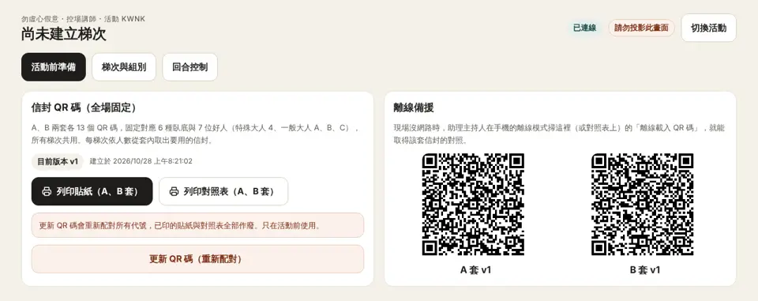
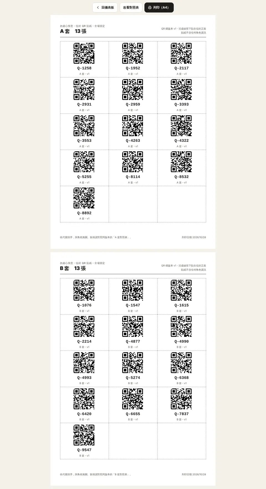
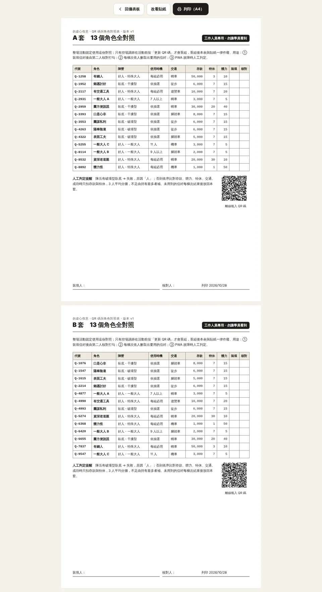
QR 碼全場固定
A、B 兩套各 13 個 QR 碼，固定對應 6 種虛偽大人與 7 位真誠大人（特殊大人 4 位、一般大人 A、B、C），所有梯次共用。第 1 組用 A 套、第 2 組用 B 套。
4. 每梯次：分組與抽虛偽大人 控場講師
- 儀表板 →「梯次與組別」，選梯次、輸入本梯次總人數。系統自動分組：11 人以下 1 組；12 人分 6＋6；13 人分 6＋7。
- 每組依人數自動帶入真誠大人角色與虛偽大人人數（見下表）。
- 每組選擇虛偽大人卡抽法：
- 實體抽（預設）：學員從 6 張虛偽大人卡中實體抽出。綁定座位時掃到哪張虛偽大人就是哪張。
- 儀表板抽：儀表板先隨機抽定（可手動改、可重新抽）。綁定時只接受抽中的虛偽大人卡。
- 按「建立本梯次」。「回合控制」分頁會出現各組的加入 QR 碼。建立新梯次會清除上一梯次的綁定與結算記錄。
| 每組人數 | 真誠大人 | 虛偽大人張數 |
|---|---|---|
| 6 | 特殊大人 4 位（資深老道親、有交通工具、體力怪、有錢人） | 2 |
| 7 | 特殊大人 4＋一般大人 A | 2 |
| 8 | 特殊大人 4＋A | 3 |
| 9 | 特殊大人 4＋A、B | 3 |
| 10 | 特殊大人 4＋A、B | 4 |
| 11 | 特殊大人 4＋A、B、C | 4 |
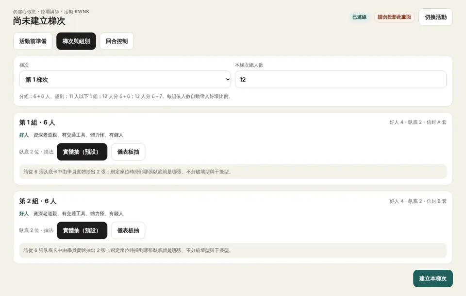
5. 手機加入與綁定座位 助理主持人
- 加入組別：用手機相機或本程式「掃組別 QR 碼」，掃儀表板上自己那一組的 QR 碼。畫面顯示「第 N 梯次・第 N 組」與人數，確認無誤後按「確認，開始綁定座位」。
- 綁定座位：學員抽完信封、依座位編號坐定後，從 1 號開始順時針，按「掃 N 號座位的信封」逐一掃。掃描視窗會保持開啟，可以連續掃下一位。
- 畫面上方顯示「還需真誠大人 x 位・虛偽大人 y 位」。掃到不該出現的信封時會提示換信封，例如這個人數用不到的真誠大人、虛偽大人已滿額、最後一個虛偽大人名額卻還沒有破壞型，或儀表板抽時掃到沒抽中的虛偽大人卡。
- 掃錯可按「重掃上一位」。全員綁定完成後，儀表板才會出現回合控制。
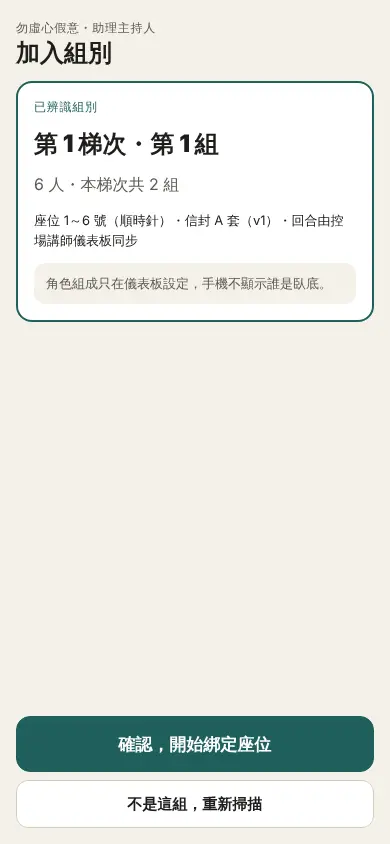
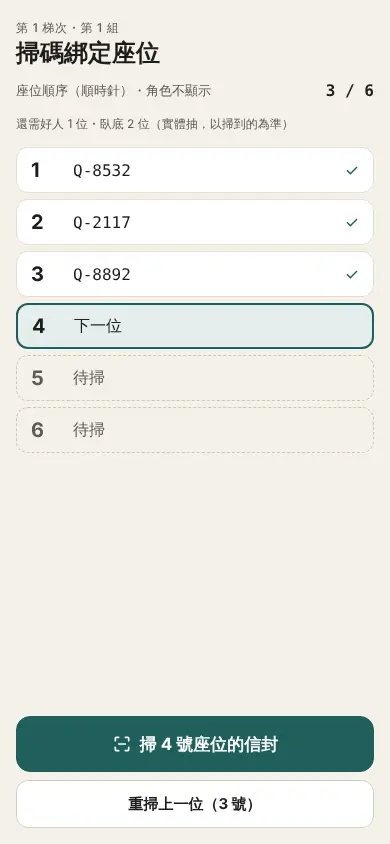
6. 每回合：任務與結算
控場講師選任務與開始
- 「回合控制」選擇本回合任務。6 張任務卡中，用過的會以灰底標示是第幾回合，仍可重選。
- 右側出現任務 QR 碼，請各組助理主持人掃描。旁邊會顯示各組「已載入／未載入」。
- 按「開始回合」，各組同步倒數 5 分鐘。
助理主持人控場講師輪值隊長與不記名表決
- 輪值隊長：從 1 號開始，由隊長提出 3 人名單，控場不介入。每次表決結束（通過或否決）就換下一號當隊長，手機、儀表板與玩家手機都會顯示目前是幾號。
- 不記名表決，兩種方式擇一：
- 紙本：學員把 O／X 寫在小紙片交給控場主持人，計票後在表決區按「O 過半・通過」或「X 過半或平手・否決」。離線單機也用這個。
- 玩家手機：有開玩家版時，掃滿 3 人會自動開始手機表決，也可按「開始手機表決」。畫面只顯示票數與還沒投的座位，不顯示誰投了什麼；全部投完自動計票。口是心非只能投 X、鄉愿討好只能投 O。
- 否決時換下一位隊長重新提名、再表決（不再輪流發言）。同一回合否決 3 次，系統自動記為「任務失敗，原因：無法派人」，不扣資源；按錯可撤銷。
助理主持人掃任務與結算
- 按「掃任務 QR 碼」。掃不到時可按「直接載入目前任務」。
- 組員舉牌通過、隊伍出發後，按「掃第 1 位」並連續掃出任務 3 人的信封。掃不到時，展開「改點座位編號」直接點號碼。點已選的座位卡可移除。
- 確認畫面上的 3 個號碼正確後，按「判定結果」。
- 畫面顯示「任務成功」或「任務失敗」，以及控場講師的宣告詞。宣告時只說成敗與原因類別，不說是誰。
- 任務成功時，畫面列出 3 人扣除後的存款與特休，請幫學員抄到角色卡背面的「剩餘」欄，然後勾選「已填好」。
- 圖謀私利被派中、任務又需要存款時，畫面會多一張「圖謀私利拿走了隊伍的存款」，同樣列出 3 人的存款剩餘量（他的存款會增加），請一樣抄到角色卡。
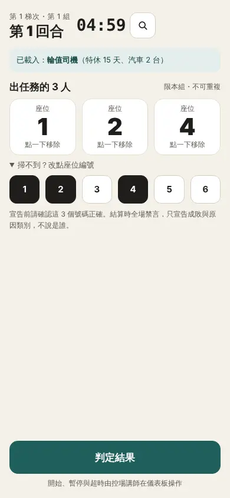
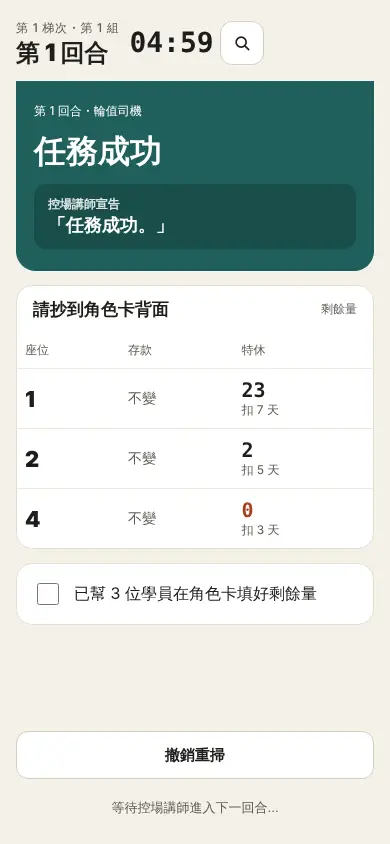
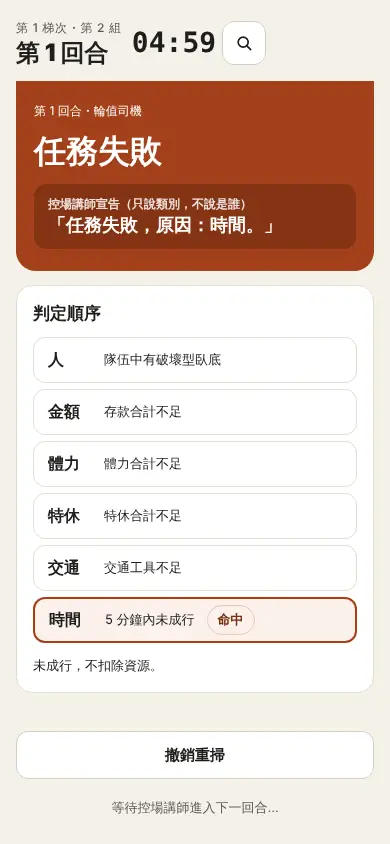
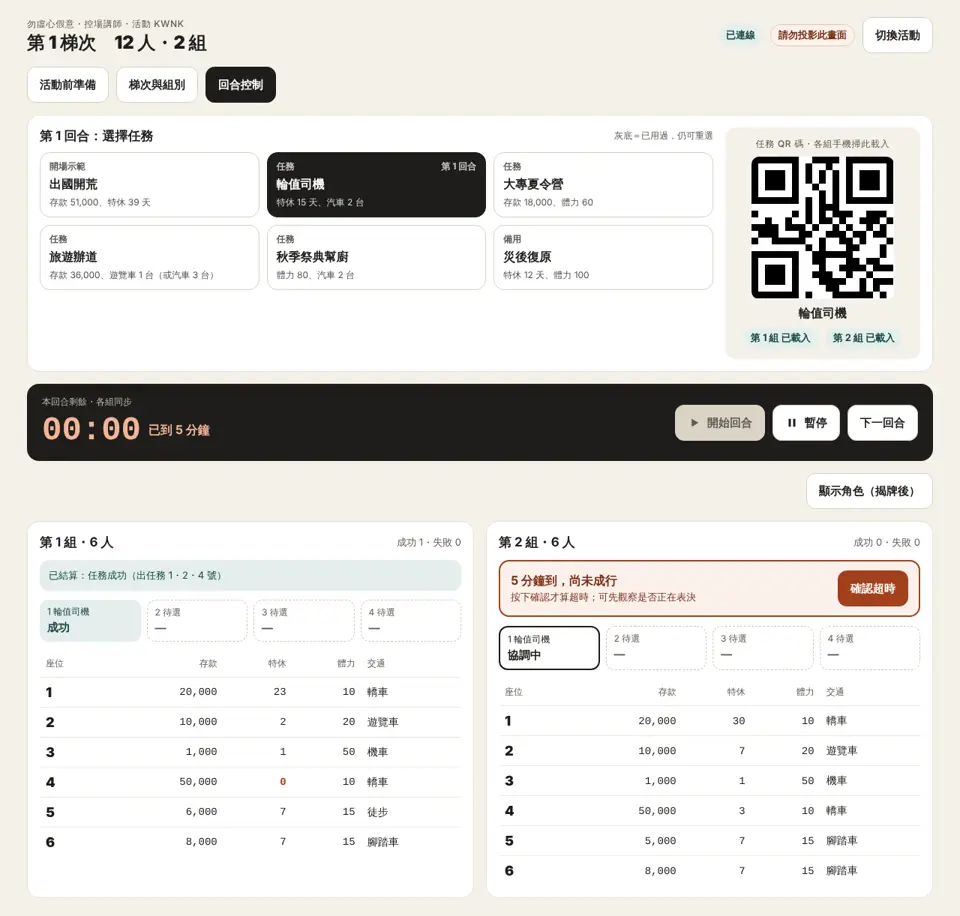
控場講師下一回合與揭牌
- 各組都結算後按「下一回合」，再選下一個任務。若還有組別沒結算，系統會先確認。
- 揭牌後可按「顯示角色（揭牌後）」，在各組資源表加上角色欄。
7. 暫停、超時與撤銷
- 暫停／繼續 控場講師：儀表板的「暫停」會讓所有手機同步停止倒數，例如第 1 回合需要補充說明時使用。
- 超時 控場講師：5 分鐘到時，還沒成行的組別會在儀表板跳出「5 分鐘到，尚未成行」與「確認超時」按鈕。主持人按下才算超時，該組這回合記為「任務失敗，原因：時間」，不扣資源。若只是正在表決，可以先觀察再決定。按錯可按「撤銷」。
- 撤銷重掃 助理主持人：掃錯人或少掃一人時，在結果畫面按「撤銷重掃」，資源會還原，再重新掃一次。
8. 角色查詢與校正卡片 助理主持人
回合畫面右上角的放大鏡按鈕可以隨時掃任一信封，查看：
- 座位、代號、角色與陣營（可按「隱」暫時遮住角色名稱）
- 角色卡背面應填內容：存款與特休的初始值與 4 格「剩餘」欄應該填的數字，最新一格會標出來
- 資源使用記錄：每回合有沒有出任務、成敗、扣了多少（含替別人補差額）
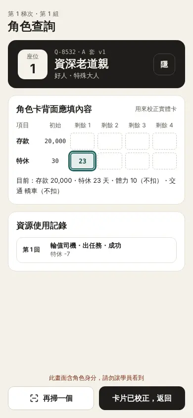
編輯模式：遊戲中修正資料 控場講師
遊戲進行中若發現角色卡裝錯、資源抄錯，或想臨時調整難度，可在儀表板按「編輯模式」修改：
- 玩家資源與角色：每組每個座位的角色、目前剩餘存款與特休、體力、交通。選到已在別的座位的角色時，兩個座位會互換；換成沒綁定的信封時，資源改用該角色的初始值。
- 角色初始值：13 個角色的存款、特休、體力、交通。影響之後新綁定的座位、角色查詢的初始值與列印的對照表。
- 任務條件：6 個任務的存款、特休、體力、汽車與遊覽車台數。之後的結算依新條件判定。
修改只在按「儲存並通知」後才生效（可填修正說明）。儲存後：
- 儀表板與受影響組別的助理主持人手機會出現「主持人已修正資料」橫幅，列出改了什麼；請依角色查詢校正學員的角色卡。
- 受影響的玩家手機會提示「你的角色資料或資源已修正」；任務條件修改則提示所有玩家看最新條件。玩家端提示不含任何角色資訊。
- 已結算的回合紀錄不會被改寫；角色查詢的資源記錄會多一筆「修正」。
9. 離線單機模式 沒網路時
現場網路不穩或沒有網路時，各組手機可以改用離線單機模式。離線後本組只在這支手機運作，不再同步，也沒有儀表板，任務、計時與超時都由助理主持人在手機上決定。
- 首頁選「離線單機操作」，或在加入畫面按「現場沒網路？改用離線單機操作」。
- 選梯次、組別、人數與虛偽大人抽法（實體抽／手機抽），以及信封套別。
- 手機上需要有該套的對照：曾經連線開過本程式就會自動留存；沒有的話按「掃離線載入 QR 碼」，掃對照表右下角或儀表板上的 QR 碼。
- 按「切換為離線並開始綁定」，之後綁定座位的方式與連線時相同。
- 每回合：在手機上選任務 → 按「開始計時」→ 掃 3 人 → 判定。右上角可暫停；5 分鐘到時手機會出現「確認超時」。結算後按「下一回合」。
- 活動結束後按「結束並清除離線資料」。
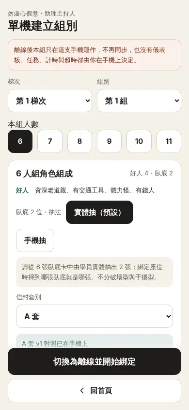
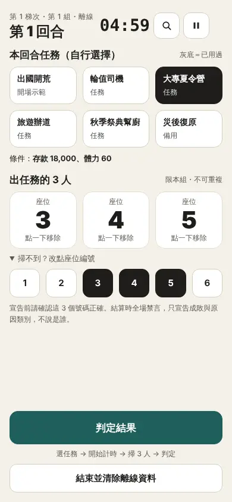
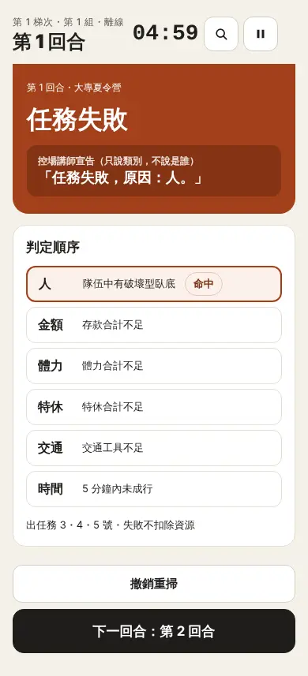
10. 玩家版：手機看自己的角色 控場講師玩家
僅限連線模式。玩家用自己的手機掃自己的信封，就能在手機上查看角色、目標、要做的事與目前剩餘資源（每回合結算後自動更新）。
- 控場講師：「回合控制」下方的「玩家版」區塊有玩家入口 QR 碼，投影或印在桌牌上。按「開放玩家查看」後玩家才看得到角色；關閉後所有玩家畫面立即蓋住。
- 玩家：用手機相機掃玩家入口 → 按「掃我的信封」→ 手機貼近胸前、用手遮住，掃自己的信封（須先由助理主持人完成座位綁定）。
- 平常畫面只顯示座位與本回合任務等公開資訊。按住畫面中間才顯示角色，放開立刻蓋回；切到別的 App、關螢幕或 8 秒後也會自動蓋回。
- 真誠大人與虛偽大人的畫面版面、顏色、長度都一樣，遠看無法分辨。
- 一個信封只能在一支手機開啟；別人掃到會顯示「已在另一支手機開啟」。玩家換手機時，可在儀表板玩家版區塊點該座位，或在助理主持人的「角色查詢」按「重設手機綁定」。
- 遊戲結束後按「揭牌：公開所有身分」，玩家手機會顯示自己的身分、回合紀錄與本組所有人的身分，供引導討論使用。
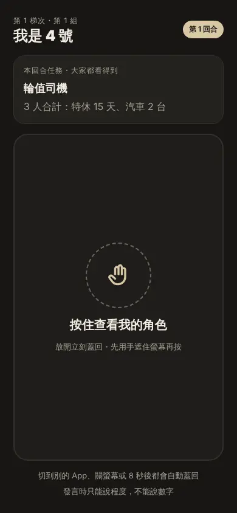
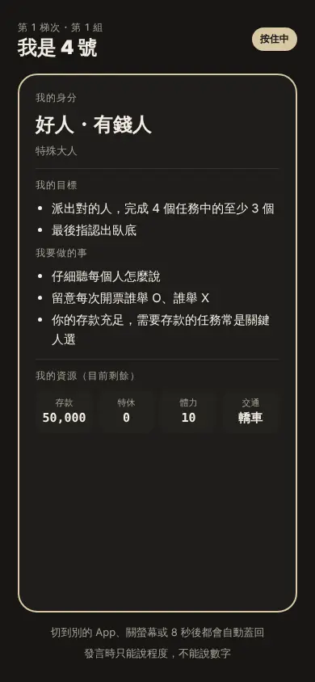
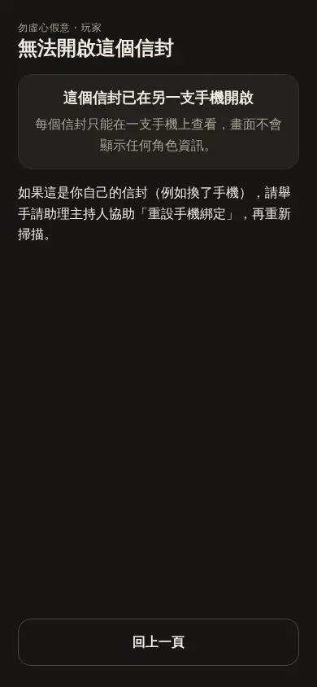
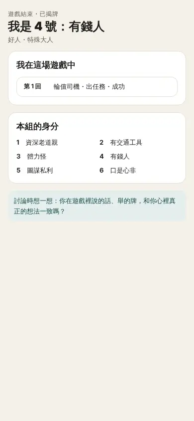
11. 判定規則速查
判定順序（由上而下，命中即停）
| 宣告 | 使用時機 |
|---|---|
| 「任務失敗，原因：人。」 | 隊伍中有破壞型虛偽大人（陽奉陰違、表面工夫；圖謀私利出不需要存款的任務、或和陽奉陰違／表面工夫同隊時也算這項，不扣除） |
| 「任務失敗，原因：金額。」 | 存款合計不足；或圖謀私利出需要存款的任務（隊上沒有其他破壞型）：隊伍提出的存款全被他拿走，任務因錢不足而失敗 |
| 「任務失敗，原因：體力。」 | 體力合計不足 |
| 「任務失敗，原因：特休。」 | 特休合計不足 |
| 「任務失敗，原因：交通。」 | 交通工具不足 |
| 「任務失敗，原因：時間。」 | 5 分鐘內未成行，由主持人確認超時 |
| 「任務失敗，原因：無法派人。」 | 同一回合表決否決 3 次（系統自動判定） |
干擾型虛偽大人（圖方便說謊、口是心非、鄉愿討好）被派中時，資源照常計算，任務不會因為他而失敗。
扣除規則
- 只算出任務的 3 人；同一個人的同一項資源只算一次。
- 「汽車」指轎車與遊覽車，各算一台；機車、腳踏車、徒步不算。
- 任務成功時只扣存款與特休，由 3 人平均分攤；有人不足平均額就扣到 0，差額由持有最多的人補，仍不足再由次多的人補。
- 體力與交通工具不扣除。任務失敗不扣除。
- 例外：圖謀私利出需要存款的任務時，3 人照上面的方式分攤存款（含不足時由最多的人補），但收到的錢全部記到圖謀私利名下，任務失敗；特休不扣。例：體力怪、有錢人、圖謀私利出大專夏令營（存款 18,000）→ 體力怪付 1,000（扣到 0）、有錢人付 11,000、圖謀私利自己付 6,000 後收走 18,000，淨增 12,000。若隊上同時有陽奉陰違或表面工夫，「人」優先：任務失敗、原因「人」、不扣任何資源，圖謀私利也拿不到錢。只有圖謀私利會拿走錢，陽奉陰違與表面工夫不會。
任務條件（3 人合計）
| 任務 | 條件 | 備註 |
|---|---|---|
| 出國開荒 | 存款 51,000、特休 39 天 | 開場必答，其他任務自由選 |
| 輪值司機 | 特休 15 天、汽車 2 台 | |
| 大專夏令營 | 體力 60、存款 18,000 | |
| 旅遊辦道 | 存款 36,000、遊覽車 1 台（或汽車 3 台） | |
| 秋季祭典幫廚 | 體力 80、汽車 2 台 | 只算體力與車輛，成功也不扣資源 |
| 災後復原 | 體力 100、特休 12 天 | 備用 |
任務順序由控場講師每回合自行選擇，不限定。
12. 常見狀況
相機打不開、掃不到 QR 碼
先確認已允許相機權限、網址是 https。掃描視窗下方可以手動輸入代號，輸入 4 位數字即可（例如 4827）。掃隊員時也可以展開「改點座位編號」直接點號碼。
掃到「這是 vN 的舊貼紙」
QR 碼曾被更新過，這張貼紙已作廢。請換成目前版本的貼紙與對照表。
掃到「這個信封不在本組的套別」
第 1 組用 A 套、第 2 組用 B 套，請確認信封沒有拿錯套。
綁定時提示「虛偽大人已滿」或「這個真誠大人角色本組不使用」
這張信封不屬於本組這次要用的角色，請換一個信封。實體抽時，虛偽大人以先掃到的為準。
手機重新整理或不小心關掉了
重新開啟程式，按「助理主持人手機」會自動回到原本的組別與進度，資料都在雲端（離線模式則留在這支手機上）。
手機顯示「這張組別 QR 碼已失效」
控場講師已建立新梯次，請重新掃儀表板上新的組別 QR 碼。
結算掃錯人
在結果畫面按「撤銷重掃」，資源會還原，再重新掃一次。宣告前請先確認畫面上是 3 個正確號碼。
現場網路中斷
儀表板上方會顯示「連線中斷」。短暫斷線恢復後會自動同步；若長時間無法連線，請各組改用離線單機模式，或用紙本對照表人工判定。
玩家說看不到角色
確認儀表板已按「開放玩家查看」、該座位已由助理主持人綁定；若顯示「已在另一支手機開啟」，請重設該座位的手機綁定。
想換一台電腦開儀表板
在新電腦開啟儀表板 →「開啟既有活動」，輸入 4 碼活動代碼即可。